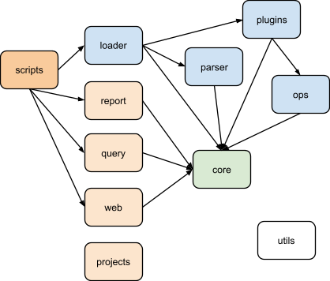
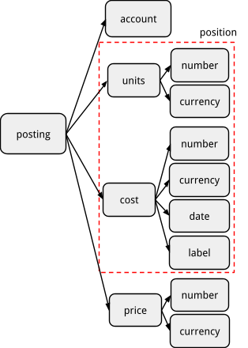
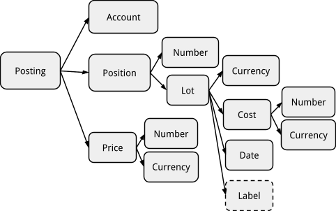
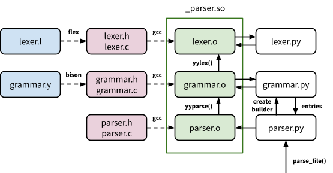
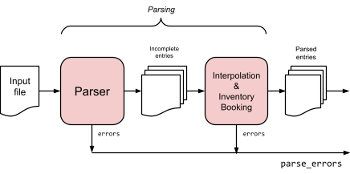
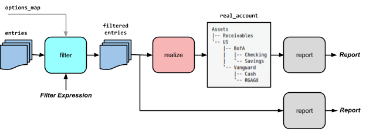

非官方中文译文 · 术语保留英文；代码、account、option、币种原样。 原文：https://beancount.github.io/docs/beancount_design_doc/
Beancount 设计文档
Martin Blais (blais@furius.ca)
http://furius.ca/beancount/doc/design-doc
一份供开发者理解 Beancount 内部机制的指南。我希望本文档能为源代码中使用的主要对象提供一张地图，以便轻松地在 Beancount 之上编写脚本和插件，甚至对其进行扩展。
简介
本文档阐述了 Beancount 设计背后的原则，并对其代码库、数据结构、算法、实现和方法论进行了高层概述。这并非用户手册；如果您只想使用 Beancount，请参阅相关的用户手册以及所有其他在此处可用的文档。
然而，如果您只是想更深入地了解 Beancount 的工作原理，本文档应该非常有帮助。对于开发者来说，这也应该是一个有趣的阅读材料。这里记录了许多关于 Beancount 背后理念的内容，这些内容在其他地方没有合适的发表场所。请预期会有一些对普通用户来说并不重要的随机思考。
通常，人们会在编写软件之前撰写设计文档。我并没有这样做。但我认为，在这里阐明导致这种设计的一些想法仍然值得。我希望有人会觉得这有用。
不变量
输入隔离
Beancount 应当仅接受您提供给其工具的文本文件作为输入。具体而言，它不应联系任何外部网络服务，也不应打开任何“全局”文件，即使是历史价格缓存或其他类似文件也不应例外。这种隔离是有意为之的设计。将输入隔离到单一来源，使得在问题发生时更容易进行调试、复现和定位。这是该工具的一个良好特性。
此外，获取和转换外部数据非常繁琐。外部数据格式通常质量很差，且种类繁多，无法全部处理（仅处理最常见的子集就会引发关于新转换器实现应放在何处的疑问）。最重要的是，数据表示问题与数据获取和转换问题在本质上可以很好地分离：Beancount 提供了一个核心，允许您摄取所有交易数据并从中生成报告，其语法是连接这些外部交易或价格存储库的枢纽。通过这种方式，它将自己与外部数据源的丑陋细节隔离开来。
顺序无关性
Beancount 保证输入文件中 directive 的顺序与其计算结果无关。您应该能够按照最方便的方式组织输入文本并重新排列任何声明，而无需担心软件将如何执行计算。这也使得包含多个文件的实现变得非常简单：如果您愿意，只需将文件拼接在一起即可，并且可以按任意顺序处理它们。
即使是声明 account 或商品的 directive，也不要求在这些 account 在文件中被使用之前出现。所有 directive 都会被解析，然后在任何计算或验证发生之前基本上进行 排序（一个次要细节是，行号被用作排序的次要键，以确保重新排序的稳定性）。
相应地，语言中所有非 directive 语法仅限于设置具有全局影响的值（“option”、“plugin”）或与语法相关的便捷功能（“pushtag”、“poptag”）。
存在一个例外：
-
选项可能在文件处理过程中产生效果，因此应出现在文件开头。目前，Beancount 并未强制执行此规则，例如通过执行多次解析路径，但它可能应该这样做。
-
此外，包含文件中的选项是在每个文件内解析的，但只保留从顶级文件解析的选项。您应该将所有选项放在顶级账本文件中。（TODO(mblais)：此部分有待审查并必须重新设计。）
所有 Transaction 必须平衡
所有 transaction 必须按“权重”平衡。没有任何例外。Beancount 的 transaction 必须保持平衡，这是强制要求。
具体而言，不允许存在诸如 Ledger 中可见的“虚拟 posting”之类的例外。Beancount 的初始实现曾允许此类 posting。因此，我经常使用它们来“解决”那些我不知如何良好建模的问题。当我重写 Beancount 时，我着手将整个输入文件转换为避免使用这些 posting，并随着时间推移成功做到了这一点，在此过程中我学到了很多新东西。此后，我确信虚拟 posting 完全是不必要的，提供它们只会成为一种拐杖，许多用户会依赖它，而不是学习如何使用平衡的 transaction 来建模转账。我尚未遇到足够令人信服的理由来支持它们1。
这提供了一种特性：任何 transaction 子集的总和都为零。这是一个很好的特性，意味着我们可以在任何时间点生成资产负债表。即使我们最终支持结算日期或按 posting 的日期，我们也会以不破坏此不变量的方式拆分 transaction。
账户具有类型
Beancount 账户应被约束为五种类型之一：Assets、Liabilities、Income、Expenses 和 Equity。其背后的理由在于，所有计数事项都可以被表征为永久性（Assets、Liabilities）或暂时性（Income、Expenses），并且绝大多数账户具有惯常的余额符号：正数（Assets、Expenses）或负数（Liabilities、Income）。对于任何需要累积的数量，我们总可以为其选择这四种标签类型之一。
强制实施这一约束，使得实现永久性账户的累积值报告（balance sheet）以及时间段变化报告（income statement）成为可能。虽然在技术上可以显式地对 Equity 账户进行 posting，但该类别项目的通常用途是记录资产负债表上的过往变化（净利润/留存收益或期初余额）。
这些关于时间和符号的概念超越了传统会计的范畴。缺乏这些概念会引发关于如何计算此类报告的困难且不必要的疑问。我们仅仅要求你将账户标记为符合此模型。我承认这需要一些练习和前瞻性思考，但最终结果是一种结构，能够轻松让我们构建出通常预期的输出。
账户生命周期与 Open 指令
账户具有生命周期；账户在特定日期打开，并可选择在另一日期关闭。这由 Open 和 Close 指令控制。
所有账户都要求在数据流中拥有对应的 Open 指令。默认情况下，当向尚未在数据流中看到其 Open 指令的账户进行 posting 时，系统会输出错误以强制执行此规则。你可以使用 “auto_accounts” 插件来自动化生成这些指令，但无论如何，条目数据流始终会包含 Open 指令。这是一个在编写脚本时可以依赖的假设。
（类似的约束也可以选择性地应用于 Commodity 指令，以确保数据流始终在某个商品被使用之前包含其声明；参见 beancount.plugin.check_commodities 插件。）
仅支持日期（不支持时间）
Beancount 不表示时间，仅表示日期。最小的时间间隔为一天。这是为了保持简洁。虽然确实存在需要时间来区分账户余额的情况，但在实践中，这些情况足够罕见，不足以证明引入处理时间值的额外复杂性以及提供相应语法的必要性。
如果你有必须使用时间的用例，可以通过 metadata 来添加时间信息，或者更可能的是，你应该为此编写自定义软件。这是 Beancount 有意排除在范围之外的。
metadata 用于用户数据
默认情况下，Beancount 不会对 metadata 字段和值做出任何假设。Metadata 专供用户私有使用以及供插件使用。Beancount 核心不会读取 metadata，也不会基于它来改变其处理逻辑。然而，插件可以定义特殊的 metadata 值，从而影响其输出结果。
话虽如此，Beancount 处理过程中会生成几个特殊的 metadata 字段：
-
filename: 一个字符串，表示读取该 transaction 的文件名（或创建它的插件）
-
lineno: 一个整数，表示读取该 transaction 的文件中的行号。
-
tolerances: 一个从货币到 Decimal 的字典，表示在平衡该 transaction 时使用的 tolerance 值。
-
residual (on postings): 一个布尔值，如果该 posting 是自动添加以吸收舍入误差，则为 true。
未来可能会生成更多此类字段，但无论如何，核心不应读取任何 metadata 并因此影响其行为。（我可能应该创建一个中央注册表或位置，以便在一处找到所有特殊值。）
代码库概览
所有源代码都位于一个 “beancount” Python 包下。它由几个具有明确职责的包组成，包之间的依赖关系受到严格约束。

Beancount 源代码包及其大致依赖关系。
在最底层，我们有一个 beancount.core 包，其中包含用于在内存中表示 transaction 和其他 directive 的数据结构。它包含关于 account、amount、lot、position 和 inventory 的代码。它还包含用于处理 directive 流的常用例程。
往上一层，beancount.parser 包包含解析 Beancount 语言的代码，以及一个可以根据 directive 流生成相应文本的打印器。应该能够在文本和数据结构之间进行转换，并且在此往返过程中不丢失任何信息。
在主包的根部，有一个 beancount.loader 模块，它协调加载文件到内存所需执行的所有操作。这是任何编写 Beancount 脚本的人的主要入口点，它总是从加载一个条目流开始。这会调用解析器，运行一些处理代码，导入插件并按顺序运行它们，以生成用于生成 report 的最终 directive 流。
beancount.plugins 包包含各种插件的实现。这些插件模块彼此独立。请查阅源代码中的 docstring 以了解每个模块的功能。其中一些是想法的原型。
有一个 beancount.ops 包，其中包含一些高级处理代码，以及一些默认始终运行的代码（这些代码也实现为插件，例如使用 Pad directive 进行 padding）。这个包需要稍作整理，以明确其角色。
在此之上，reporting 代码调用这些包中的模块。有四个包含 reporting 代码的包，对应于 Beancount 的 reporting 工具：
-
beancount.reports：此包包含专门用于生成不同类型输出的代码（由 bean-report 调用）。一般来说，我希望避免定义自定义例程来生成所需的输出，而是使用 SQL 查询工具来表达分组和聚合，但我认为始终需要其中至少一部分。report 定义在一个具有通用接口的类层次结构中，你应该能够扩展它们。每个 report 支持若干输出格式的子集。
-
beancount.query：此包包含一种查询语言和交互式 shell 的实现（由 bean-query 调用），允许你使用类似 SQL 的 DSL 对 position 进行分组和聚合。这基本上实现了对 Posting 对象内存表的处理，并定义了针对 Amount、Position 和 Inventory 对象的函数。
-
beancount.web：此包包含默认 web 界面的所有源代码（由 bean-web 调用）。这是一个简单的 Bottle 应用程序，将 beancount.report 中的许多 report 以 HTML 格式提供，并在你的机器上本地运行。web 界面提供简单的视图和对数据的访问。（它有待大幅改进，远非完美。）
-
beancount.projects：此包包含我为特定应用编写并希望分享和分发的各种自定义脚本。在可能的情况下，我旨在将这些脚本整合到 report 中。没有用于调用这些脚本的脚本；你应该使用 “
python3 -m beancount.projects.<name>” 来运行它们。
有一个 beancount.scripts 包，其中包含 bin 目录 下所有脚本的 “main” 程序。这些脚本是简单的启动器，导入 beancount.scripts 下对应的文件。这允许我们将所有源代码保留在单个目录下，这使得在代码上运行 linter 和其他代码健康检查器变得更加容易——所有代码都在一个地方。
最后，有一个 beancount.utils 包，用于包含通用的可重用杂项实用代码。还有一个相对不重要的 beancount.docs 包，其中包含作者仅用于生成和维护本文档的代码（连接到 Google Drive 的代码）。
这些包之间依赖关系的强制实施是通过一个 自定义脚本 完成的。
核心数据结构
本节描述了用于表示 directive 的基本数据结构，这些结构是构建的基石。在可能的情况下，我将以概念性的方式描述这些数据结构。
（给 Ledger 用户的提示：本节介绍了 Beancount 的一些术语；如果你有兴趣将其与 Ledger 中的概念和术语进行对比，请参见这里。）
number 类型
Numbers 使用 decimal 对象表示，这非常适合此用途。在会计系统中输入的大多数数字自然是十进制数，而二进制表示会引入表示误差，从而在显示和 precision 方面引发许多问题。有理数可以避免这个问题，但它们并不携带用户在输入中意图的有限 precision。我们必须显式地处理 tolerances。
因此，所有数字都应使用 Python 的 “decimal.Decimal” 对象。 conveniently，Python v3.x 原生支持 decimal 类型的 C 实现（在其标准库中；这曾经是一个需要安装的外部 “cdecimal” 包，但已集成到 C/Python 解释器中）。
decimal 对象的默认构造函数不支持我们想要允许的一些输入语法，例如数字整数部分中的逗号（例如 “278,401.35 USD”）或从空字符串初始化。这些是必须处理的重要情况。因此，我提供了一个特殊的构造函数来适应这些输入：beancount.core.number.D()。这是创建 decimal 对象时应使用的唯一方法：
from beancount.core.number import D
…
number = D("2,402.21")
我喜欢单独导入 “D” 符号（而不是使用 number.D）。所有与数字相关的代码都位于 beancount.core.number 下。
还定义了一些数字常量：ZERO、ONE 和 HALF。请使用这些常量，而不是显式构造的数字（例如 D("1")），因为这更容易通过 grep 查找此类初始化。
commodity
Commodity（或 currency，我在代码和文档中交替使用这两个名称）是一个字符串，表示可以存储在 account 中的一种“事物”。在实现中，它被表示为一个 Python str 对象（没有专门用于货币操作的模块）。这些字符串只能包含大写字母、数字和一些特殊字符（参见 lexer 代码）。
Beancount 不预定义任何货币名称或类别——所有货币都是平等的。真的。它确实对美元、欧元、日元或其他任何货币没有任何特殊认知。源代码中唯一提及这些货币的地方是在测试中。不支持使用“$”或其他货币符号的语法；我理解一些用户可能希望拥有这种语法，但为了保持 parser 的简单和一致性，我选择不提供该选项。
此外，Beancount 不区分代表“货币”的 commodity 和代表其他事物（如股票、小时等）的 commodity。这些在整个系统中被同等对待。它也没有“本位币”（"home" currency）的概念2；它是一个真正的多货币系统。
Currencies 无需在输入文件格式中显式定义；你可以直接在文件中使用它们，它们会通过其独特的语法被识别（lexer 会识别并输出 currency tokens）。但是，你可以使用 Commodity directive 声明一些 commodity。这只是为了提供一个 per-commodity 实体，用户可以在其上附加一些 metadata，并且某些 report 和插件能够找到并使用该 metadata。
account
Account 基本上就是与 posting 关联的桶的名称，表示为一个简单的字符串（一个 Python str 对象）。Account 由词法分析器检测和分词，其名称至少包含两个由冒号（":"）分隔的词。
Account 没有对应的对象类型；我们仅通过其唯一的名称字符串来引用它们（类似于 Python 中的文件名）。当需要按 account 的属性时，我们可以从条目流中提取 Open directive，并找到与我们正在查找的特定 account 相对应的那一个。
类似于 Python 的 os.path 模块，有一些例程用于操作 account 名称，位于 beancount.core.account，这些函数的命名与 os.path 模块中的函数类似。
Account 名称的第一个组件限于以下五种类型之一：
-
Assets
-
Liabilities
-
Equity
-
Income
-
Expenses
从输入语法中读取的 account 类型名称可以通过某些 "option" directive 进行自定义，因此您可以将这些名称更改为另一种语言，或者如果您更喜欢，甚至可以将 "Income" 重命名为 "Revenue"。beancount.core.account_types 模块包含一些用于处理这些的辅助工具。
请注意，account 名称的集合形成了一个隐式层次结构。例如，以下名称：
Assets:US:TDBank:Checking
Assets:US:TDBank:Savings
隐式地定义了一个节点树，其中父节点为 "Assets"、"US"、"TDBank"，并带有两个叶节点 "Checking" 和 "Savings"。这个隐式树在处理过程中从未被实例化，但有一个 Python 模块可以轻松地完成此操作（参见 beancount.core.realization），并创建树的线性化渲染。
flag
“flag” 是一个单字符字符串，可以关联到 transaction 和 posting，以指示它们是否被假定为正确（即已“reconciled”）或被标记为可疑。在 transaction 实例上，通常使用的值是字符 “*”。在 posting 上，它通常被省略（并设置为 None）。
amount
Amount 是数字与关联货币的组合，概念上表示为：
Amount = (Number, Currency)
Amount 实例用于表示特定货币的数量（即“单位”）以及 posting 上的 price。
在 beancount.core.amount 中定义了一个类，将其实现为一个简单的类元组对象。存在若干函数，可直接对 Amount 实例执行简单的数学运算。你也可以使用 amount.from_string() 创建 Amount 实例，例如：
value = amount.from_string("201.32 USD")
cost
Cost 对象表示某一特定 lot 的 cost basis。从概念上讲，它由以下部分组成：
Cost = (Number, Currency, Date, Label)
这里的 number 和 currency 指的是成本本身的数值和货币，而非标的商品。例如，如果你以 56.78 USD 的价格购买了 40 股 AAPL 股票，那么 Number 是十进制数 “56.78”，Currency 是 “USD”。示例如下：
Cost(Decimal("56.78"), "USD", date(2012, 3, 5), "lot15")
Date 是对应 lot 的获取日期（一个 datetime.date 对象）。当 posting 增加库存时，该日期会自动附加到 Cost 对象上——Transaction 的日期会自动附加到 Cost 对象——或者当输入语法提供了显式的日期覆盖时。
Label 可以是任意字符串。它作为一种便利机制，供用户引用特定 lot 或区分相似的 lot。
在 Cost 对象中，number、currency 和 date 属性始终会被设置。如果 label 未设置，其值为 “None”。
cost spec
在输入语法中，我们允许用户提供尽可能少的信息，以便在 posting 之前区分库存中包含的 lot。提供的数据会将匹配的 lot 集合过滤为唯一的选择，或过滤为一个子集，从而应用自动 booking 算法（例如，“FIFO”）。
此外，我们允许用户提供单位成本（per-unit cost）和/或总成本（total-cost）。这种便利功能有助于让 Beancount 根据总收益自动计算单位成本。
CostSpec = (Number-per-unit, Number-total, Currency, Date, Label, Merge)
由于输入元素中的任何一项都可能被省略，因此 CostSpec 的任何属性都可以保留为 None。如果某个 number 缺失且需要填充，则会为其设置特殊值 “MISSING”。
Merge 属性用于记录用户请求在应用 transaction 之前合并所有输入 lot，并在之后再次合并它们。这是所有使用 “AVERAGE” booking 方法记入账户的 transaction 所使用的方法。
position
Position 表示以 cost 持有的某种特定商品的一定数量。它仅由以下部分组成：
Position = (Units, Cost)
Units 是 Amount 的实例，Cost 是 Cost 的实例；如果该商品不是以 cost 持有，则为 null 值。库存包含 Position 实例的列表。参见其定义于 beancount.core.position.
posting
每个 Transaction 指令由多个 Posting 组成（我在代码和邮件列表中通常非正式地称这些为 transaction 的“legs”）。每个 posting 都与一个 account、一个 position 以及可选的 price 和 flag 相关联：
Posting = (Account, Units, Cost-or-CostSpec, Price, Flag, Metadata)
如你所见，Posting 内嵌了其 Position 实例3。Units 是一个 Amount，而 ‘cost’ 属性指的是一个 Cost 或 CostSpec 实例（解析器输出带有 CostSpec 属性的 Posting 实例，该属性由 booking 过程解析为 Cost 实例；详见 How Inventories Work）。
Price 是 Amount 的实例或 null 值。它用于声明货币转换以平衡 transaction，或表示以 cost 持有的 position 的当前价格。它是输入中出现在 “@” 旁边的 Amount。
Posting 上的 flag 相对少见；用户通常会发现标记整个 transaction 而不是特定的 posting 就足够了。flag 通常留为 None；如果设置，它是一个单字符字符串。
Posting 类型在 beancount.core.data 中定义，连同所有 directive 类型。
inventory
Inventory 是用于存储账户在不同 lot 中商品余额的容器。它本质上是一个 Position 实例的列表，并定义了相应的操作。从概念上讲，你可以将其视为一个具有唯一键的映射：
Inventory = [Position1, Position2, Position3, … , PositionN]
通常，列表中 position 的 (Units.Currency, Cost) 组合保持唯一，类似于映射的键。对于货币和 cost 值相等的 position，会通过累加它们的 Units.Number 并保留单个 position 来合并。此外，简单的 position 会与以 cost 持有的 position 混合在列表中。
Inventory 是 Beancount 实现中最重要的且使用最频繁的对象之一，因为它用于汇总一个或多个账户随时间变化的余额。它也是应用 inventory 减少算法的地方，并且可以在那里找到该机制的痕迹。“How Inventories Work” 文档提供了该过程的完整细节。
为了进行测试，你可以使用 inventory.from_string() 创建已初始化的 Inventory 实例。所有 inventory 代码都编写在 beancount.core.inventory 中。
关于元组与不可变性
尽管该程序是用一种并未将不可变性设为“默认困难”的语言编写的，但我设计软件时力求在大多数地方避免可变性。Python 提供了一个“collections.namedtuple”工厂，用于创建属性不可被覆盖的新记录类型。嗯……这只有部分正确：不可变元组中的可变属性仍然可以被修改。Python 并没有提供非常强大的机制来强制实施这一特性。
无论如何，函数式编程与其说是实现我们程序所用语言的属性，不如说是我们构建到其结构中的保证。支持强保证的语言有助于强制实施这一点。但是，如果仅仅通过遵循一组约定，我们就能大部分避免可变性，那么我们就拥有了一个大部分是函数式的程序，它避免了大多数由不可预测的变异引起的陷阱，我们的代码也就更容易维护。那些对变异发生位置不加特别关注的程序是最难维护的。通过以函数式方法避免大部分变异，我们也就避免了其中大部分问题。
-
Beancount 中使用的大多数数据结构都是 namedtuples，它们故意使得修改其属性变得不便。
-
大多数代码都会尝试避免变异，除了局部状态（在函数内部）或在一个我们可以轻松理解的狭窄范围内。在可能发生变异的地方，按照惯例，我默认会避免它。当我们确实进行变异时，我会尝试记录其影响。
-
我避免创建会改变其内部状态的类，除了少数情况（例如 Web 应用程序）。我更喜欢函数而不是对象，在我定义类时，我主要避免继承。
这些特性对于所有小型对象尤其成立：Amount、Lot、Position、Posting 对象，以及来自 beancount.core.data 的所有 directive 类型。
另一方面，Inventory 对象几乎总是作为累加器使用，并且确实允许修改其内部状态（避免这一点需要一种特殊的持久数据结构）。你必须小心如何共享对 Inventory 对象的访问……以及如果你确实要修改它们的话。
最后，loader 生成的是由所有简单的 namedtuple 对象组成的 directive 列表。这些列表构成了主要的应用状态。我故意避免将这些列表放入某种特殊容器中，而是明确地传递它们。而不是拥有某种大的“application”对象，我精简了所有冗余，你的所有状态都由两样东西表示：一个按日期排序的、可作为流处理对象的 directive 列表，以及一个只读常量选项值列表。我认为这样更简单。
我之所以能够对中等规模的 Python 代码库进行广泛更改，归功于采纳了这些原则。我很希望拥有类型，以防范另一类潜在错误，我计划尝试 Python 3.5 即将推出的 typing 模块。
摘要
下图说明了这些对象之间的关系，从 Posting 开始。

例如，要访问某个 posting 的单位数量，可以使用
posting.units.number
对于成本货币：
posting.cost.currency
你可以在 Python 中打印出这些元组（tuples）以了解其结构。
之前的设计
为了保留历史记录，如果你回到仓库的早期版本，posting 的结构曾经更深、更复杂。新设计反映了其更扁平、更简单的版本。以下是旧设计的样子：

directive
加载 Beancount 输入文件的主要产物是一个 directives 列表。在代码库和文档中，我也将这些 entries 互换使用。存在多种类型的 directives：
-
Transaction
-
Balance & Pad
-
Open & Close
-
Commodity
-
Note
-
Event
-
Price
-
Document
在典型的 Beancount 输入文件中，绝大多数 entries 将是 Transactions 和一些 Balance assertions。还会有 Open 以及可能的一些 Close entries。其他所有内容都是可选的。
由于这些 entries 与选项值映射表共同构成了整个应用程序状态，你应该能够将那些 entries 提供给生成 reports 的函数。该系统围绕处理 directives 流以提取所有内容并生成 reports 这一理念构建，这些 reports 本质上是对附加在该 directives 流上的值进行不同形式的过滤和聚合。
通用属性
以下属性为所有 directive 所共有：
- Date. 一个 datetime.date 对象。这一点既实用又具有一致性。对于 Transaction，这是其发生的日期。对于 Open 或 Close directive，这是账户开立或关闭的日期。对于 Pad directive，这是插入 transaction 的日期。对于 Note 或 Document，这是在相应账户的 posting 流中插入该注释的日期。对于 Event，这是其发生的日期。对于 Commodity directive，它本质上为商品相关元数据提供了一个按商品划分的挂载点，因此日期的意义不大；我选择将日期设为该商品创建的那一天。
- Meta. 所有 directive 都具有元数据属性（一个 Python dict 对象）。元数据的目的是允许用户挂载任意类型的辅助数据，并在脚本或查询中使用这些数据。Posting 实例也具有元数据属性。
transaction
Transaction 指令是 Beancount 的核心主题，也是输入文件中最常见的指令，值得特别关注。记账系统的功能是以各种方式组织与 Transaction 关联的 Posting。系统中的其他所有条目类型都扮演辅助角色。
Transaction 具有以下附加字段。
flag
单字符 flag 通常用于替代 “txn” 关键字（Transaction 是唯一允许在不输入其关键字的情况下输入的指令）。我一直在考虑稍微修改语法定义，以允许不输入 flag 也不输入关键字，因为我希望最终支持这种用法。目前，flag 或关键字二者必选其一。Flag 属性可以设置为 None。
payee 与 narration
Narration 字段是用户提供的 transaction 描述，例如 "Dinner with Mary-Ann."。你可以在这个字符串中放入任何信息。它会显示在 journal report 中。它经常被用来为 transaction 添加无法自动导入的上下文信息，例如 "transfer from savings account to pay for car repairs."。
Payee 名称是可选的，用于描述 transaction 所涉及的实体，例如 "Whole Foods Market" 或 "Shell."。
请注意，我希望能够生成与特定 payee 相关的所有 transaction 的 report，因此输入一致的 payee 名称会很有帮助。问题在于，正确执行这一操作的代价有时过高。需要更好的工具或更宽松的名称匹配机制才能使这变得可行。
输入语法也允许仅提供单个字符串。默认情况下，这会成为 narration，但我发现实际上仅拥有 payee 也很有用。这只是一个便利性问题。目前，如果你只想输入 payee 字符串，你需要附加一个空的 narration 字符串。这一点应该在未来重新审视。
tag
Tags 是字符串集合，可用于对 transaction 集合进行分组（如果没有 tags，则设置为 None）。然后可以生成该 transaction 子集视图，包括所有常规 report（balance sheet, income statement, journals 等）。你可以为 transaction 添加 tags 以实现多种目的；以下是一些示例：
-
特定旅行期间的所有 transaction 可以打上 tag，以便稍后汇总你的旅行费用。这些 transaction 通常发生在相近的日期，因此存在一种方便的语法，用于自动为文件中一起声明的许多 transaction 添加 tag。
-
与特定待完成项目相关的 transaction。我曾在某个在线项目中上过一些课程，并将所有相关费用都打上了 tag。我使用它来跟踪特定阶段（例如绿卡）的所有移民相关费用。
-
声明一组稍后由雇主（或你自己的公司）报销的费用。
-
与地点搬迁相关的费用。
我通常使用的典型 tag 名称看起来像 #trip-israel-2012、#conference-siggraph 和 #course-cfa。
一般来说，当添加子 account 无法解决问题时，tags 很有用。这种情况通常发生在一组相关费用类型各异，因此不属于单个 account 时。
在查询工具提供适当支持的情况下，它们最终可以被 metadata 所取代——我一直在考虑将 tags 转换为值为 True 的布尔型 metadata 键，以消除不必要的复杂性。
link
Links 是唯一的字符串集合或 None，在实践中，对于大多数 transaction 来说通常是空的。它们与 tags 的区别仅在于目的。
Links 用于将一系列相关 transaction 链接在一起，并且有工具用于列出、导航和平衡一组链接在一起的 transaction 子集。它们是 transaction 引用其他 transaction 的一种方式。它们不用于汇总。
示例包括：来自交易账户的 transaction-ids（这些通常提供指向“相关”或“其他” transaction 的 id）；与相关更正关联的 account 条目，例如，电话后撤销的费用可以与几周前原始无效费用链接；房屋买卖及相关购置费用。
与 tags 不同，它们的字符串通常是由 importer 生成的唯一数字。不会为 links 生成视图；只能生成特定 links transaction 的 journal，并且渲染的 transaction 应伴随一个实际的“link”图标，你可以点击它查看所有其他相关 transaction。
posting
Transaction 对象附带一个 Posting 列表。从技术上讲，这个列表对象是可变的，但在实践中我们尽量避免修改它。一个 Posting 只能属于单个 Transaction。
有时，同一 transaction 的不同 posting 会在其各自的 account 中于不同日期结算，因此我们最终可能会允许 posting 拥有自己的日期以覆盖 transaction 的日期，用作文档记录；在最简单的版本中，我们强制所有 transaction 准时发生，这易于理解，且在实践中并未发现是重大问题。最终，我们可能会通过隐式地将具有多个日期的 Transaction 转换为多个 Transaction，并使用某种 transfer account 来持有日期之间的待处理余额来实现这一点。详情请参阅相关提案。
配平 posting
复式记账的基本原则在每个 Transaction 条目中得到强制执行：所有 posting 的总和必须为零。本节描述了我们实现这一目标的具体方式，这是使整个系统能够良好平衡的关键逻辑部分。这也是系统中少数几个计算超出简单过滤和聚合的地方之一。
如前所述，posting 与以下内容相关联：
-
一个 position，即一个 lot 的单位数量（该 lot 本身可能带有 cost，也可能没有）
-
一个可选的转换 price
基于此，我们如何平衡一个 transaction？
有必要定义一些术语：对于此示例 posting：
Assets:Investment:HOOL -50 HOOL {700 USD} @ 920 USD
Units. 单位数量是 position 的数量，即“50”。
Currency. lot 的商品，即“HOOL”。
Cost. 此 position 的 cost 是单位数量乘以 cost 货币中的每单位 cost，即 50 x 700 = 35000 USD。
(Total) Price. 一个单位的 price 是附带的 price 金额，920 USD。一个 position 的总 price 是其单位数量乘以转换 price，在此示例中为 50 x 920 = 46000 USD。
Weight. 用于平衡 transaction 中每个 posting 的金额：
-
如果 posting 有关联的 cost，我们计算 position 的 cost（无论是否存在 price）；
-
如果 posting 没有关联的 cost 但有转换 price，我们将 position 转换为其总 price；
-
最后，如果 posting 既没有关联的 cost 也没有转换 price，则直接使用 lot 的单位数量。
平衡非常简单：每个 Posting 的 position 首先被转换为其 weight。然后，这些金额按 currency 分组，并断言每种 currency 的最终总和接近于零，即在小的 tolerance 范围内（如由输入中的数字和选项组合推断）。
以下示例属于情况 (2)，包含一个 price 转换和一个既无 cost 也无 price 的常规 leg（情况 3）：
2013-07-22 * "Wired money to foreign account"
Assets:Investment:HOOL -35350 CAD @ 1.01 USD ;; -35000 USD (2)
Assets:Investment:Cash 35000 USD ;; 35000 USD (3)
;;------------------
;; 0 USD
在下一个示例中，第一个 leg 的 posting 有 cost，第二个 posting 既没有 cost 也没有 price：
2013-07-22 * "Bought some investment"
Assets:Investment:HOOL 50 HOOL {700 USD} ;; 35000 USD (1)
Assets:Investment:Cash -35000 USD ;; -35000 USD (3)
;;------------------
;; 0 USD
这是一个更复杂的示例，同时包含 price 和 cost；此处的 price 在平衡目的中被忽略，仅用于在内部 price 数据库中录入一个数据点：
2013-07-22 * "Sold some investment"
Assets:Investment:HOOL -50 HOOL {700 USD} @ 920 USD ;; -35000 USD (1)
Assets:Investment:Cash 46000 USD ;; 46000 USD (3)
Income:CapitalGains -11000 USD ;; -11000 USD (3)
;;------------------
;; 0 USD
最后，这是一个包含多种商品的示例：
2013-07-05 * "COMPANY INC PAYROLL" Assets:US:TD:Checking 4585.38 USD Income:US:Company:GroupTermLife -25.38 USD Income:US:Company:Salary -5000.00 USD Assets:US:Vanguard:Cash 540.00 USD Assets:US:Federal:IRAContrib -540.00 IRAUSD Expenses:Taxes:US:Federal:IRAContrib 540.00 IRAUSD Assets:US:Company:Vacation 4.62 VACHR Income:US:Company:Vacation -4.62 VACHR
这里有三组需要平衡的权重：
-
USD: (4485.38) + (-25.38) + (-5000) + (540) ~= 0 USD
-
IRAUSD: (540.00) + (-540.00) ~= 0 IRAUSD
-
VACHR: (4.62) + (-4.62) ~= 0 VACHR
金额的省略
Transaction 允许最多省略一个 posting 并自动设置其值；如果省略了金额，则其他所有 posting 的最终余额之和将被归因于该省略的 posting。
借助 inventory booking proposal，这一机制应扩展以处理更多省略情况。一个有趣的想法是允许被省略的 posting 至少指定其使用的货币。这将允许用户省略多个 posting，例如：
2013-07-05 * "COMPANY INC PAYROLL"
Assets:US:TD:Checking USD
Income:US:Company:GroupTermLife -25.38 USD
Income:US:Company:Salary -5000.00 USD
Assets:US:Vanguard:Cash 540.00 USD
Assets:US:Federal:IRAContrib -540.00 IRAUSD
Expenses:Taxes:US:Federal:IRAContrib IRAUSD
Assets:US:Company:Vacation 4.62 VACHR
Income:US:Company:Vacation VACHR
流处理
使用单一指令流来表示所有状态的一个重要副产品是，Beancount 中的大多数操作都可以通过简单的函数来实现，这些函数接受指令列表作为输入，并输出修改后的指令列表。
例如，
-
“Pad” 指令是通过处理 transaction 流、累积余额，并在 balance assertion 失败时，在 Pad 指令之后插入一个新的 padding transaction 来实现的。
-
汇总 操作（开账、关账、将净收益结转至权益）都是以此方式实现的，作为指令列表上的函数式操作符。例如，在特定日期开账是通过汇总特定日期之前的所有余额，并用新的 transaction 替换那些 transaction 来实现的，这些新 transaction 从 Equity account 中提取最终余额。关账仅涉及将损益表 account 的余额移至 Equity，并将 transaction 列表截断至该日期。这非常优雅——report 代码可以完全忽略汇总已经发生这一事实。
-
带有 cost 的 posting 上的 price 通常会被忽略。“implicit prices” 选项是通过一个 plugin 实现的，该 plugin 通过处理操作流，在发现此类 posting 时自动插入原本平淡无奇的 Price 指令来发挥作用。
-
许多类型的验证也是以此方式实现的；sellgains plugin 验证非收入余额是否与忽略 cost 后的 posting 转换 price 相符。这个 plugin 不会插入任何新的 directive，但可能会生成新的错误。
这些只是一些例子。我的目标是让大多数操作都能以这种方式工作。这种设计已被证明是优雅的，但也出乎意料地灵活，并且催生了 Beancount 中可用的 plugins 系统；你可能会惊讶地得知，我最初并没有打算提供 plugins 系统……它只是随着时间推移，通过提炼抽象并尝试在程序中避免状态而自然形成的。
我正在考虑通过提供一个新的 “Error” directive 来实验将错误编织进指令流中，该 directive 可以由流处理函数插入。我目前还不确定这是否会简化任何事情，这目前只是一个想法 [2015年7月]。
流不变量
指令流附带一些你可以依赖的保证：
-
所有指令均按日期排序。由于许多日期包含多条指令，为了获得稳定的排序顺序，文件中的行号被用作次要排序键。
-
流中所有对 account 的使用之前，都有一条对应的 Open 条目。如果输入未提供该条目，系统将自动合成一条 Open 指令。
-
所有 Balance 指令都位于特定日期的任何其他指令之前。这一约束是为了使 balance assertion 的处理变得直接明了，并强调其语义是在一天开始时发生。
loader 与处理顺序
从输入文件中加载条目列表的过程是项目的核心。理解这一过程对于理解 Beancount 的工作原理至关重要。请参阅下图。

它由以下步骤组成：
-
一个解析步骤，读取所有输入文件并生成一个可能不完整的 directive 流。
-
由内置插件和用户指定的插件处理此条目流。此步骤可能会生成新的错误对象。
-
一个最终验证步骤，确保插件未破坏不变量。
beancount.loader 模块协调此处理过程。在代码和文档中，我仔细区分“parsing”和“loading”这两个术语。 这两个概念是不同的。“Parsing”只是“loading”的一部分。
用户指定的插件按照它们在输入文件中提供的顺序运行。
Raw 模式。 一些用户表达了对控制哪些内置插件运行以及运行顺序的更多需求，因此启用“raw”选项会禁用所有内置插件的自动加载（如果你希望这样做，必须用显式的“plugin” directive 替换它们）。我不确定这是否会有用，但它允许对加载过程进行更紧密的控制以进行实验。
loader 输出
解析器和加载器生成三个列表：
-
entries: 来自 beancount.core.data 的 directive 元组列表。这是数据流，应主要由 Transaction 和 Balance 实例组成。尽可能通过从此列表中插入或删除条目来执行所有数据转换。在代码和文档中，我交替将这些称为 entries 或 directives。
-
errors: 错误对象列表。在 Beancount 中，我不使用异常来报告错误；相反，所有函数都生成错误对象，并在最适当的时间显示它们。（这些值得拥有一个共同的基类，但目前它们遵循的约定是它们都提供 source（文件名，行号）、message 和 entry 属性。TODO(mblais): 我最终希望清理这一点，并在所有错误类型上强制执行共同点。）
-
options_map: 在文件中提供并在解析期间派生的选项字典。虽然这是一个可变对象，但一旦由解析器生成，我们就不再修改它。
解析器实现
Beancount 的解析器是 C 语言和 Python 3 代码的混合体。这也是你首先需要编译任何内容的原因。解析器使用 C 语言实现，采用 flex 分词器和 Bison 解析器生成器，主要出于性能考虑。
我选择 C 语言以及这些老旧的 GNU 工具，因为它们具有可移植性，可以在任何地方运行。市面上有更好的解析器生成器，但它们要么要求用户安装更多的编译器工具，要么需要一些异类语言。C 语言是一个很好的最大公约数。我希望 Beancount 能在任何地方运行，并且易于安装。我希望这能方便他人，但我也希望这能方便我自己，因为总有一天我会从事其他项目，依赖越少，维护老化软件就越轻松。这是未雨绸缪。（这也是我选择使用 Python 而不是我如今更自然地被吸引的其他语言（Clojure、Go、ML）的原因；我需要 Beancount 能正常工作……当我在数豆子时，我没有时间去调试问题。Python 对其变更非常谨慎，并且它会像现在这样长期存在。）
有一个用 flex 编写的分词器文件 lexer.l 和一个 Bison 语法文件 grammar.y。这些工具用于生成相应的 C 源代码（lexer.h/.c 和 grammar.h/.c）。这些代码，连同一些手写的 C 代码（定义了模块的一些接口函数，parser.h/.c），被编译成一个扩展模块（_parser.so）。
最终，我们可以考虑在 setup.py 中创建一个小的依赖规则，以自动调用 flex 和 Bison，但就目前而言，为了最小化安装负担，我将生成的源代码（lexer.h/c 和 grammar.h/c）检入到仓库中。

Python 代码和 C 代码之间的交互方式如下：
-
你导入 beancount.parser.parser 并调用 parse_file() 或 parse_string()。这使用 grammar.py 中的代码创建一个 Builder 对象，该对象本质上提供了 Python 回调来处理语法规则。
-
parser.py 调用扩展模块中的 C 函数，并传入 Builder 对象。该 C 代码设置 flex 以能够读取输入文件或字符串，然后通过调用生成的 C 函数 “yyparse()” 将控制权移交给解析器。
-
yyparse() 是解析器，它会通过连续调用 “yylex()” 从分词器 C 代码中获取输入 token，并尝试归约规则。
-
当规则或 token 成功归约时，C 代码会调用你提供的 Builder 对象上的回调方法。解析器的规则通过传递 “PyObject*” 实例来相互通信，因此代码必须小心地正确处理引用计数。这允许我在规则归约时运行 Python 代码，这使得自定义解析器行为变得非常容易，同时保持了 C 语言中语法规则处理的性能。
请注意，grammar.py 中的 Builder 继承自 lexer.py 中定义的类似 Builder 类，因此分词器识别 token 时调用 lexer.py 文件中定义的方法来创建它们，而解析器规则相应地调用 grammar.py 中 Builder 的方法。这种隔离不仅干净，还使得仅使用分词器从 Python 中对文件进行分词（而不进行解析）成为可能，以便测试分词器；如果你好奇这如何工作，请查看使用此功能的测试。
这是我刚刚想出来的；我在别处没见过这样做。我尝试了一下，与使用 PLY 相比，更快的解析器带来了巨大的差异，所以我坚持使用它。我非常喜欢这种模式，它是一个很好的折衷方案，既提供了解析器生成器的灵活性，又允许我使用 Python 处理规则。最终，我希望将一些最重要的回调移到 C 代码中，以使其速度大幅提升（我还没有进行任何真正的性能优化）。
到目前为止这运行得很好，但有一件事4：flex 分词器固有的几个限制已被证明是有问题的。特别是，为了使用缩进识别 transaction 的 posting，我不得不将行首出现的空白符进行分词。此外，输入中的单个字符应被解析为标志，目前这仅限于一小部分字符。我最终希望编写一个具有某些前瞻能力的自定义分词器，以更好地处理这些问题（这很容易做到）。
解析的两个阶段：不完整条目
目前，解析器生成的 transaction 可能平衡，也可能不平衡。在插件运行之后执行的验证阶段会执行 balance assertion。这种自由度是为了给用户提供一个机会，让他们可以输入不完整的 posting 列表，并让相应的插件自动化部分数据录入并插入补全的 posting。
然而，transaction 上的 posting 始终是完整的对象，其所有预期属性都已设置。例如，在输入语法中省略了金额的 posting，在从解析器输出时，其位置（position）已经被填充。
当我们要实现 inventory booking proposal 时，必须放宽这一属性，因为我们希望支持省略那些数值依赖于先前 transaction 累积状态的数字。下面是一个显而易见的例子。像这样的 posting
2015-04-03 * "Sell stock"
Assets:Investments:AAPL -10 AAPL {}
...
如果在 4 月 3 日开始时，该 account 中恰好包含 10 个单位的 AAPL（无论是单个 lot 还是多个 lot），则应该成功。这里没有歧义：“卖出所有 AAPL”，它就是这样说的。然而，其无歧义性假设我们已经计算了该 account 直到 4 月 3 日的 inventory balance……
因此，解析器需要拆分为两个阶段：
-
一个简单的解析步骤，生成可能带有缺失金额的不完整条目
-
一个独立的 interpolation 步骤，该步骤将拥有每个 account 的 inventory balance 作为输入。booking 算法（例如 FIFO）将从这个第二步中被调用。

请参阅上图作为参考。一旦实现，其他所有内容应该保持不变。
printer（打印器）
与 parser 位于同一 package 中的是一个 printer。这将所有处理 Beancount “语言”的功能隔离在 beancount.parser package 中：parser 负责将输入语法转换为数据结构，而 printer 则执行相反的操作。该 package 之外的任何代码都不应关注 Beancount 语法。
在某个时间点，我决定确保 printer 能够通过 parser 进行 round-trip，也就是说，给定由 loader 生成的一系列 entries，你应该能够将它们转换为文本输入并重新解析，最终得到的 entries 集合应当是相同的（将重新读取的输入再次输出为文本时，应产生相同的文本），例如：
请注意，反向操作并不一定成立：读取输入文件并通过 loader 处理时，可能会合成大量 entries（得益于 plugins），因此将其打印回去可能不会生成相同的输入文件（即使忽略重新排序和空白字符的问题）。
这是一个很好的特性。除了其他好处外，它还允许我们使用 parser 轻松创建具有预期输出的测试。虽然有一个测试试图保护这一特性，但最近的一些更改部分地破坏了它：
-
Metadata 的 round-tripping 测试得不够充分。特别是，某些 metadata 字段需要被忽略（例如，filename 和 lineno）。
-
某些 directive 包含派生数据，例如 Balance directive 有一个 “diff_amount” 字段，当 balance assertion 失败时，该字段包含差异值。这用于更轻松地报告错误。我可能需要在某个时间点移除这些 exceptions，因为它是唯一具有此类特性的（我可以用插入的 “Error” directive 来替代它）。
这可能需要稍后通过更完整的测试进行一些完善（目前的情况已经接近了）。
唯一性与哈希
为了能够快速比较 directive，我们支持对所有 directive 进行唯一哈希，即从每个 directive 中应能生成一个简短且唯一的 id。然后我们可以使用这些 id 来为我们的单元测试执行集合包含/排除/比较测试。我们提供了一个使用此功能的断言方法的基础测试用例类。此功能在我们的测试套件中被广泛使用。
此功能还用于检测和移除重复项。此功能是可选的，并通过 beancount.plugins.noduplicates 插件启用。
请注意，目前 directive 的哈希不包含用户元数据。
显示上下文
数字以不同的小数位数输入：
500 -> 0 位小数
520.23 -> 2 位小数
1.2357 -> 4 位小数
31.462 -> 3 位小数
通常，用于同一货币的数字会以不同的小数位数输入。鉴于输入的这种变化，产生了一个问题：如何在 report 中一致地渲染数字？
考虑到以下几点：
-
我们希望用户无需指定默认渲染时使用的小数位数。
-
数字的渲染可能因上下文而异：大多数时候，我们希望使用最常见的小数位数来渲染数字，必要时进行舍入；但在渲染汇率时，我们希望使用曾经见过的最大小数位数来渲染数字。
-
使用的小数位数往往随其所代表的 commodity 而变化。例如，美元通常以两位 precision 渲染；像 RGAGX 这样的共同基金单位数量可能由您的经纪商以 3 位 precision 记录。日元通常以整数单位指定。
-
我们希望渲染文本 report，其中需要将具有不同小数位数的数字对齐，按小数点或最右侧数字对齐，并可能在其后渲染货币符号。
为了处理这个棘手的问题，我构建了一种累加器，用于记录从某些输入中看到的所有数字，并统计每种货币所见证的 precision 统计信息。我将其称为 DisplayContext。可以从该对象请求构建一个 DisplayFormatter 对象，该对象可用于以特定方式渲染数字5。
我在代码中始终使用变量名 dcontext 和 dformat 来指代这些对象。解析器会自动创建一个 DisplayContext 对象，并在解析过程中向其提供它看到的所有数字。该对象在由 loader 生成的 options_map 中可用。
realization
经常需要计算一组经过筛选的 transaction 的最终余额，并在层级化的 account 结构中对其进行 report。参见下图。

为了创建层级化的渲染，我提供了一个称为“realization”的过程。一个 realization 是一棵节点树，其中每个节点包含：
-
一个 account 名称，
-
指向该 account 的 posting 和其他条目列表，以及
-
该 account 的最终余额，
-
子 account 名称到子节点的映射。
这些节点的类型为 “RealAccount”，它同时也是其子节点的 dict。代码库中所有类型为 RealAccount 的变量，按照惯例都以 “real_*” 作为前缀。realization 模块提供了用于遍历这些余额树并生成层级化 report 的函数，所有报告例程都使用这些函数。
例如，以下代码片段会将账户余额的树转储到控制台：
import sys
from beancount import loader
from beancount.core import realization
entries, errors, options_map = loader.load_file("filename.beancount")
real_root = realization.realize(entries)
realization.dump_balances(real_root, file=sys.stdout)
Web 界面
在用于过滤和聚合 posting 的 SQL 语法出现之前，Beancount 生成的唯一 report 就是由 bean-web 提供的 web 界面。因此，bean-web 逐渐发展得足以满足大多数使用场景和通用 report 的需求。
Reports 与 Web
bean-web 的一个重要特性是，它应该仅仅是一个薄薄的分发外壳，用于提供由 beancount.reports 层生成的 report。它曾经包含 report 渲染代码本身，但在某个时间点，我开始将所有 report 代码提取到一个独立的包中，以便生成其他格式的 report，例如文本 report 和 CSV 输出。这项工作大部分已经完成，但截至此时（2015 年 7 月），仍有一些 report 仅支持 HTML 输出。原因如下。
客户端 JavaScript
我最终希望在 web 界面中包含更多的客户端脚本。然而，我认为在一段时间内我无法着手处理这项工作，至少要在所有针对核心的变更提案完成之前（例如，inventory booking 改进、结算拆分与合并等）。
如果你希望为 Beancount 做出贡献，改进 bean-web 或创建你自己的可视化将是一个很好的切入点。
查询接口
当前的查询接口是原型的结果。它尚未像代码库的其他部分那样经过大量的测试和打磨。我一直在对其进行实验，并有许多关于改进 SQL 语言以及可从中生成的 report 类型的想法。我将其视为“完成了 70%”。
不过，它是可用的，尽管某些 report 的指定可能略显笨拙，但它能产生有用的结果。
它将在某个时间点 undergo 一次完整的重写，届时我会保留当前实现一段时间，以免现有脚本直接失效；我将实现 shell 的 v2 版本。
设计原则
最小化可配置性
首先，Beancount 应尽可能减少选项数量。其次，命令行程序不应包含任何涉及输入文件处理和语义的选项（影响输出或涉及脚本本身的选项是可以接受的）。
目标是避免功能蔓延。仅仅几个选项就可能引发复杂的交互方式，并带来许多问题。在这个项目中，我选择将设计偏向于提供最佳的默认行为，即使这意味着功能更少，而不是提供选项来定制所有可能的东西。这是苹果式的设计方法。我通常不倾向于在我的项目中使用这种方法，但我在这个特定项目中选择了它。在这个过程中我学到的是，即使只提供最初计划中的一部分功能，你也能走多远。
过多的命令行选项会使程序难以使用。例如，我认为 Ledger 就存在这个问题。我总是记不住那些我不经常使用的选项，所以我更喜欢直接设计而不包含它们。影响语义的选项应存在于文件本身中（并且也应尽可能少）。在运行进程时提供的选项应仅用于影响该进程。
减少选项数量也使软件更容易重构。演化软件库的主要障碍是代码之间复杂的交互数量。保证一组定义良好的不变量，使得日后拆分功能或以不同方式分组变得更加容易。
因此……默认情况下，我会抵制那些不通用或对大多数用户不起作用的更改。另一方面，那些能够良好泛化且需要很少可配置性的大规模更改更有可能被实现。
优先使用代码而非 DSL
Beancount 提供了一套简单的语法、相应的解析器和打印器，以及一组非常简单的数据记录类型，使用户能够轻松地编写脚本来处理数据，并利用 Python 环境中可用的众多库。如果内置的查询工具无法满足需求，我希望用户能够极其容易地在 Beancount 之上构建他们所需的功能。
这也意味着，Beancount 提供的工具不必支持每个人可能想要的所有功能。Beancount 的优势应在于表示的一致性和简洁性，而非其 report 功能的丰富程度。创建新类型的 report 应当是容易的；而修改内部实现应当是困难的。（话虽如此，它确实提供了一套不断演进的查询工具集，对于大多数用户来说应该是足够的。）
相比之下，Ledger 系统的实现提供了高级操作，这些操作以领域特定语言（DSL）中定义的“表达式”形式调用，这些表达式要么在命令行中提供，要么直接在输入文件中提供。对于用户而言，这种表达式语言是另一件需要学习的事情，而且它可能还涉及需要扩展和工作的限制……如果可能，我倾向于避免使用 DSL，转而使用 Python 中广为人知的语义，尽管这并不总是合理的。
文件格式还是输入语言？
人们可能会疑惑，Beancount 的输入语法究竟应该是一种计算机语言，还仅仅是一种数据格式。我们试图解决的核心问题，本质上是让人类能够轻松地构建从 transaction 到 posting 再到 account 及持仓的数据结构。
数据文件格式与简单的声明式计算机语言之间有什么区别？
一个区别在于文件的预期编写者。是人工编写，还是由计算机生成？输入文件至少需要由人工进行短暂的审阅和整理。尽管我们正试图通过导入代码来尽可能自动化这一流程——至少是那些繁琐的部分——但我们仍然希望审查所有添加到账本中的新 transaction，以确保其正确性。如果预期编写者是人工，那么可以将输入归类为计算机语言范畴（大多数数据格式都是为计算机编写而设计的）。
我们也可以通过其语义的强度来评判。Beancount 的语言并非设计用于执行计算，也就是说，你无法在其中定义新的“Beancount 函数”。但它拥有数据类型。在这方面，它更像是一种文件格式。
这只是一个值得思考的问题，尤其是在添加新语义的背景下。
通过解析器生成器定义语法
该语言的语法应与常用解析器生成器工具的使用相兼容。应当能够使用一个简单的词法分析器（lexer）和某个语法输入文件来解析该语言。
Beancount 的原始语法是参照 Ledger 的语法设计的。然而，在其试图将标记（markup）数量最小化的过程中，该语法使用常规工具进行解析变得相当困难。通过对语法进行简单修改，例如为字符串、账户和商品添加 token，Beancount v2 的重实现使得使用 flex/bison 解析器生成器成为可能。
这带来了重要的优势：
-
它使得对语法进行增量修改变得非常容易。如果没有明确定义的语法而使用自定义解析器，原型化语法变更可能会相当困难。
-
它使得在其他计算机语言中实现解析器变得更加容易。我最终希望能够在其他语言中解析 Beancount 输入文件。数据结构足够简单，因此用另一种语言重新实现核心部分应该很容易。
-
它需要编写和维护的代码量少得多。
（最终，我希望创建一种文件格式，以便从单一输入生成多种语言的解析器。这将在所有主要功能实现之后完成。）
未来工作
带标签的字符串
目前，account 名称、tags、links 和 commodities 均以简单的 Python 字符串表示。我力求保持简洁。在某个阶段，我希望对此进行一些优化，为每种类型创建字符串的特化形式。在此之前，我需要评估这样做的性能影响。我目前还不完全确定这如何能提升功能。
错误清理
我一直在考虑移除独立的 “errors” 列表，并将其整合到条目流中，作为自动生成的 “Error” 条目。这样做的好处是，错误可以作为流的一部分进行渲染，但这意味着每次需要打印和查找错误时，我们都必须处理整个条目列表（考虑到我们很少输出错误，这可能不是大问题）。
结论
本文档将不断演进。如果您对内部实现有任何疑问，请将其发布到 邮件列表。
参考资料
Beancount 中的任何内容均不受以下文档的启发，但你可能也会觉得它们有趣：
版权与许可：原文 © Martin Blais / beancount/docs contributors，MIT License。中文翻译为非官方 derivative work，仅供个人学习；详见 NOTICE.md。
-
我一直在考虑添加一种非常受限的非平衡 posting 形式，这种形式将保持 transaction 原本平衡的特性，即额外的 posting 无法与常规平衡 posting 进行交互（或求和）。 ↩
-
有一个名为 operating_currency 的选项，但它仅用于为构建 report 提供良好的默认值，从不用于 transaction 的处理。例如，它用于告知报告代码哪些商品应被拆分出来，拥有自己独立的余额列。 ↩
-
在 Beancount 的早期版本中情况并非如此，Posting 曾经有一个 ‘position’ 属性并对其进行组合。我更喜欢扁平化的设计，因为许多函数既适用于 Position 也适用于 Posting。不过，可以将 Posting 视为派生自 Position，尽管在技术上它并不是。 ↩
-
错误处理到目前为止有点棘手，但这都是我的错。某些类型的错误会导致核心转储（我称之为 abort()），但由于我在之前输出了合适的错误消息，所以目前问题不大。然而，我正在修复这个问题，这种行为应该很快就会消失。参见分支 "unicode"，它将明确处理此问题。 ↩
-
TODO(mblais): DisplayContext 机制已经创建，并且代码库的一部分已移植到该机制上，但仍有部分代码需要转换为使用它。例如，bean-query 表格渲染就有自己的机制，而 Web 界面则只是尚未进行代码审查。当这些工作完成并收尾时，我会关闭此工单。 ↩